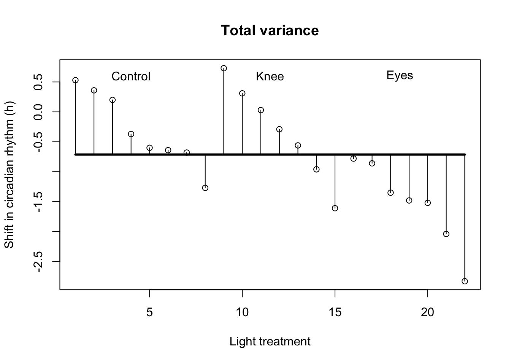
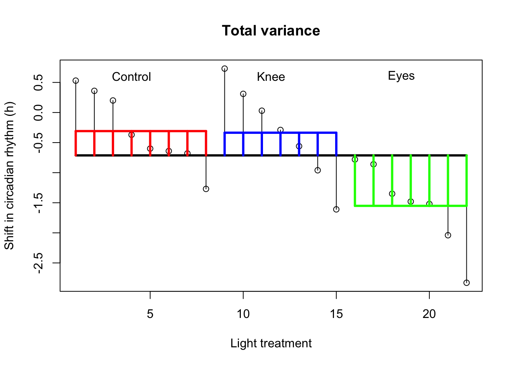
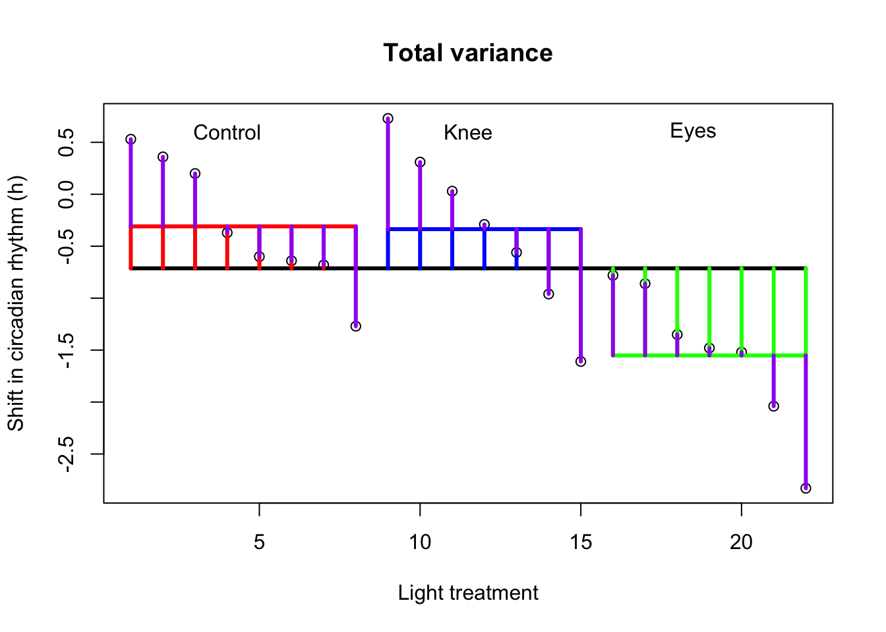
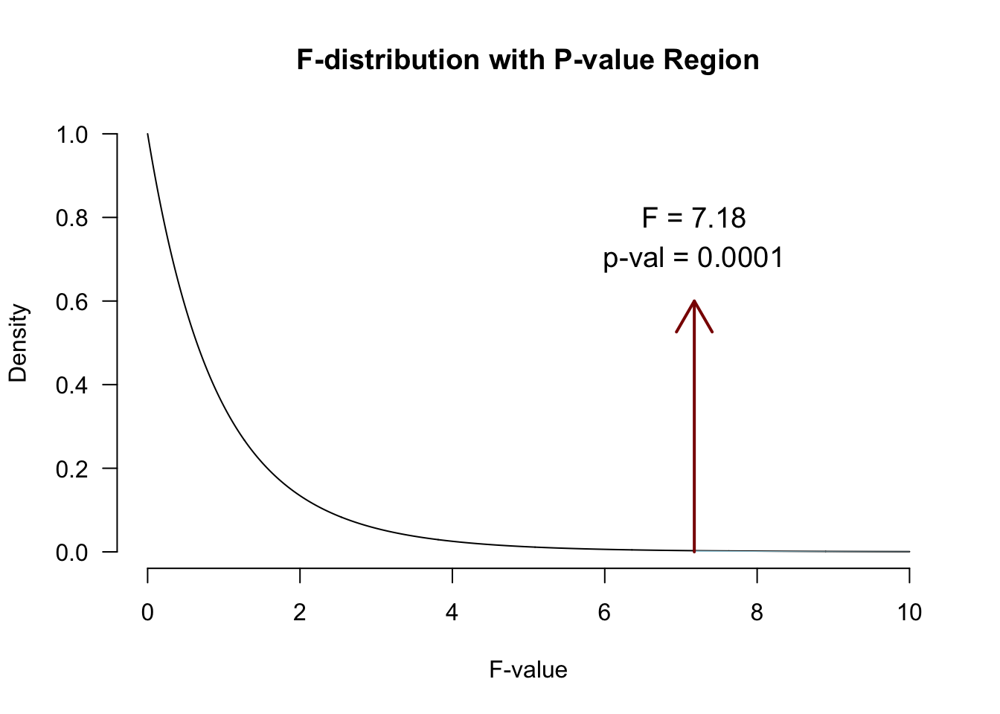

rm(list=ls())
x.c <- c( .53, .36, .2, -.37, -.6, -.64, -.68,-1.27) # Control
x.k <- c( .73, .31, .03, -.29, -.56, -.96, -1.61 ) # Knees
x.e <- c(-.78,-.86,-1.35,-1.48,-1.52,-2.04, -2.83 ) # Eyes
x <- c( x.c, x.k, x.e ) # Conditions combinedOne-way independent ANOVA
Compare 2 or more independent groups.
Assumptions
Assuming th \(H_0\) hypothesis to be true, the following should hold:
- Continuous variable
- Random sample
- Normally distributed
- Shapiro-Wilk test or Q-Q plots
- Equal variance within groups
- Levene’s test
Jet lag
Wright and Czeisler (2002) performed an experiment where they measured the circadian rhythm by the daily cycle of melatonin production in 22 subjects randomly assigned to one of three light treatments.
- Control condition (no light)
- Knees (3 hour light to back of knees)
- Eyes (3 hour light in eyes)

Variance components
| Variance | Sum of Squares | DF | Mean Squares | F-ratio |
|---|---|---|---|---|
| Model | \({SS}_{model} = \sum n_k(\bar{X}_k - \bar{X})^2\) | \(k-1\) | \(\frac{{SS}_{model}}{{df}_{model}}\) | \(\frac{{MS}_{model}}{{MS}_{error}}\) |
| Error | \({SS}_{error} = \sum s_k^2 (n_k - 1)\) | \(N-k\) | \(\frac{{SS}_{error}}{{df}_{error}}\) | |
| Total | \({SS}_{total} = {SS}_{model} + {SS}_{error}\) | \(N-1\) | \(\frac{{SS}_{total}}{{df}_{total}}\) |
Where \(N\) is the total sample size, \(n_k\) is the sample size per category and \(k\) is the number of categories. Finally \(s_k^2\) is the variance per category.
Total variance
\[{MS}_{total} = s_x^2\]
ms.t <- var(x); ms.t[1] 0.7923732sum( (x - mean(x))^2 ) / (length(x) - 1)[1] 0.7923732\[{SS}_{total} = s_x^2 (N-1)\]
N <- length(x)
ss.t <- var(x) * (N-1); ss.t[1] 16.63984sum( (x - mean(x))^2 )[1] 16.63984Visual \({SS}_{total}\)
# Assign labels
lab <- c("Control", "Knee", "Eyes")
# Plot all data points
plot(1:N,x,
ylab="Shift in circadian rhythm (h)",
xlab="Light treatment",
main="Total variance")
# Add mean line
lines(c(1,22),rep(mean(x),2),lwd=3)
# Add delta lines / variance components
segments(1:N, mean(x), 1:N, x)
# Add labels
text(c(4,11.5,18.5),rep(.6,3),labels=lab)
Model variance
\[{MS}_{model} = \frac{{SS}_{model}}{{df}_{model}} \\ {df}_{model} = k - 1\]
Where \(k\) is the number of independent groups and
\[{SS}_{model} = \sum_{k} n_k (\bar{X}_k - \bar{X})^2\]
k <- 3
n.c <- length(x.c)
n.k <- length(x.k)
n.e <- length(x.e)ss.m.c <- n.c * (mean(x.c) - mean(x))^2
ss.m.k <- n.k * (mean(x.k) - mean(x))^2
ss.m.e <- n.e * (mean(x.e) - mean(x))^2
ss.m <- sum(ss.m.c, ss.m.k, ss.m.e); ss.m[1] 7.224492df.m <- (k - 1)
ms.m <- ss.m / df.m; ms.m[1] 3.612246Visual \({SS}_{model}\)

Error variance
\[{MS}_{error} = \frac{{SS}_{error}}{{df}_{error}} \\ {df}_{error} = N - k\]
where
\[{SS}_{error} = \sum_{k} s_k^2 (n_k - 1) = \sum_{k} \frac{\sum (x_{ik} - \bar{x}_k)^2}{(n_k - 1)} (n_k - 1)\]
ss.e.c <- var(x.c) * (n.c - 1)
ss.e.k <- var(x.k) * (n.k - 1)
ss.e.e <- var(x.e) * (n.e - 1)
ss.e <- sum(ss.e.c, ss.e.k, ss.e.e); ss.e[1] 9.415345\[{MS}_{error} = \frac{{SS}_{error}}{{df}_{error}} \\ {df}_{error} = N - k\]
df.e <- (N - k)
ms.e <- ss.e / df.e; ms.e[1] 0.4955445Visual \({SS}_{error}\)

Variance components
\[{SS}_{total} = {SS}_{model} + {SS}_{error}\] \[16.6398364 = 7.2244917 + 9.4153446\]
\[{MS}_{total} = \frac{{SS}_{total}}{{df}_{total}}= 0.7923732\] \[{MS}_{model} = \frac{{SS}_{model}}{{df}_{model}}= 3.6122459\] \[{MS}_{error} = \frac{{SS}_{error}}{{df}_{error}} = 0.4955445\]
F-ratio
\[F = \frac{{MS}_{model}}{{MS}_{error}} = \frac{{SIGNAL}}{{NOISE}}\]
fStat <- ms.m / ms.e; fStat[1] 7.289449Reject \(H_0\)?
if(!"visualize" %in% installed.packages()) { install.packages("visualize") }
library("visualize")
visualize.f(fStat, df.m,df.e,section="upper")
Contrasts
Planned comparisons
- Exploring differences of theoretical interest
- Higher precision
- Higher power
Contrasts
- Values add up to 0


- AB-CDEF → A-B → CD-EF → C-D → E-F
- A-BCDEF → A-B → A-C
- A-BCDEG → BC-DEF → B-C → B-DEF
- ABC-DEF → BC-DEF → B-C
Assign values that sum to 1. Same values define chunk.
- AB-CDEF → A-B → CD-EF → C-D → E-F
| A | B | C | D | E | F | |
|---|---|---|---|---|---|---|
| Contrast 1 | ||||||
| Contrast 2 | ||||||
| Contrast 3 | ||||||
| Contrast 4 |

Post-hoc
Unplanned comparisons
- Exploring all possible differences
- Adjust T value for inflated type 1 error
- Different procedures exist (e.g., Tukey, Bonferroni)
- why?
- Same procedure as contrasts, but: exploratory vs. exploratory research
Effect size \(\eta^2\)
The amount of explained variance \(R^2\) as a general effect size measure.
\[R^2 = \frac{{SS}_{model}}{{SS}_{total}} = \eta^2\] Taking the square root gives us Cohen’s \(r\).
Effect size \(\omega^2\)
Less biased towards just the sample is omega squared \(\omega^2\).
\[\omega^2 = \frac{{SS}_{model} - ({df}_{model}){MS}_{error}}{{SS}_{total}+{MS}_{error}}\] But what does it say?
Effect size \(r\)
A more interpretable effect size measure is \(r_{Contrast}\). Which gives the effect size for a specific contrast.
\[r_{Contrast} = \sqrt{\frac{t^2}{t^2+{df}}}\]